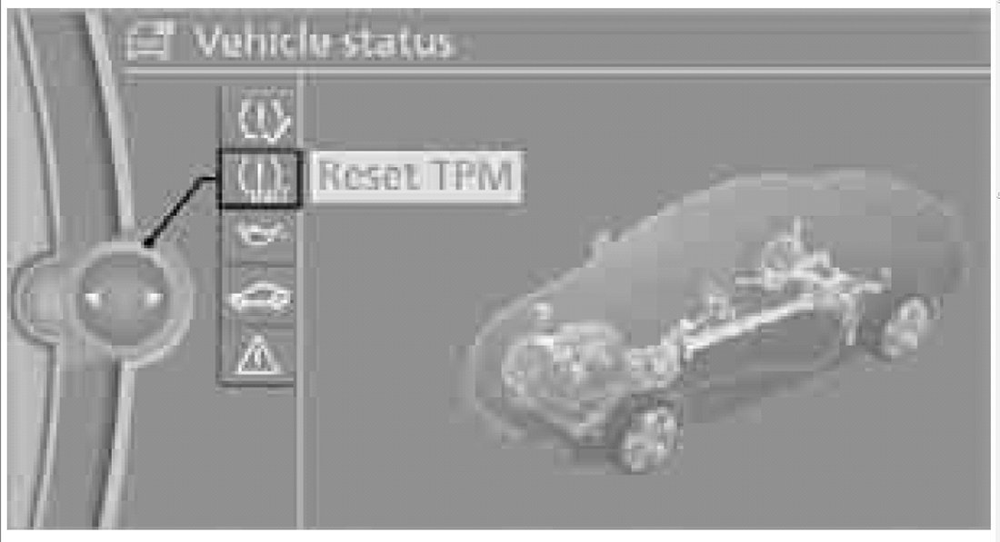
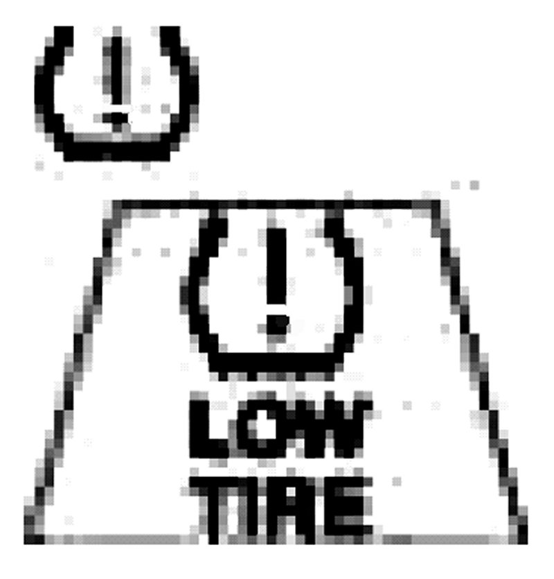

With Idrive
Tire Pressure Monitor TPMThe Concept
TPM check the inflation pressures of the four mounted tires. The system notifies if there is a significant loss of pressure in one or more tires.
Functional Requirement
In order to assure the reliable reporting of a flat tire, the system must be reset while all tire inflation pressures are correct.
Always use wheels with TPM electronics. Otherwise the system may malfunction.
NOTE: Each time a tire inflation pressure has been corrected or a wheel or tire has been changed, reset the system.
System Limitations
Caution:
TPM cannot warn you in advance of sudden severe tire damage caused by outside influences.
The system does not work correctly if it has not been reset, for example, a flat tire may be indicated even though the tire inflation pressures are correct.
The system is inactive and cannot indicate a flate tire if a wheel without TPM electronics, such as a compact spare wheel, has been mounted, or if TPM is temporarily malfunctioning due to other systems or devices using the same radio frequency.
Status Indicator on the Control Display
The color of the tires represents the status of the tires and the system.
TPM takes into account that tire pressures change while the vehicle is being driven. The tire pressures do not need to be corrected unless the TPM instructs you to do so by means of color indicators.
"Green"
The tire inflation pressure corresponds to the established target value.
"TPM active" appears on the Control Display.
"One Wheel Yellow"
There is a flat tire or substantial loss of tire pressure in the indicated tire. A message appears on the Control Display.
"All Wheels Yellow"
There is a flat tire or substantial loss of tire pressure in several tires. A message appears on the Control Display.
"Gray"
The system cannot detect a puncture.
Possible reasons for this:
TPM is being reset
Temporary malfunction caused by systems or devices using the same radio frequency.
Malfunction
Resetting the System
NOTE:
Each time a tire inflation pressure has been corrected or a wheel or tire has been changed, reset the system.
1. "Vehicle Info"
2. "Vehicle Status"

3. "Reset TPM"
4. Start the engine - do not drive away
5. Start the intialization using "Reset TPM".
6. Start to drive. The tires are shown in gray and "Resetting TPM..." is displayed.
After driving a few minutes, the set inflation pressures in the tires are accepted as the target values to be monitored. The system reset is completed during your drive, and can be interrupted at any time. When driving resumes, the reset is continued automatically. On the Control Display, the tires are shown in green and "Status: TPM active" is displayed again.
NOTE: If a flat tire is detected while the system is resetting and determining the inflation pressures, all tires on the Control Display are displayed in yellow. The message "Tire low!" is shown.
Message for low tire inflation pressure

The warning lamps come on in yellow and red. A message appears on the Control Display. In addition, a signal sounds. There is a flat tire or substantial loss of tire pressure.
1. Cautiously reduce speed below 50 mph/80 km/h. Avoid sudden braking and steering maneuvers. Do not exceed a speed of 50mph/80 km/h.
NOTE: If the care is not equipped with Run Flat Tires, do not continue driving. Otherwise a severe accident could result after a tire puncture if you continue driving.
2. In the event of complete pressure loss, 0 psi/ 0kPa, you can estimate the possible distance for continued driving on the basis of the following guidelines.
- With a light load:
1 to 2 persons without luggage:
approx. 155 miles/250 km
- With a medium load:
2 persons, cargo bay full, or 4 persons without luggage
approx. 95 miles/ 150 km
- With a full load:
4 persons cargo bay full:
approx. 30 miles/ 50 km
Caution:
Drive cautiously and do not exceed a speed of 50 mph/ 80 km/h. In the event of pressure loss, vehicle handliing changes. This includes reduced tracking stability in braking, extended braking distance and altered natural steering characteristics.
If unusual vibration or loud noises occure durin the journey, this may be an indication that the damaged tire has finally failed. Reduce your speed and pull over as soon as possible at a suitable location. Otherwise parts of the tire could come loose, resulting in an accident. Do not continue driving.
Malfunction
The small warning lamp flashes in yellow and then lights up continuosly; the larger warning lamp comes on in yellow. On the Control Display, the tire are shown in gray and a message appears. No puncture can be detected.
This type of message is shown in the following situations:
- If there is a malfunction
Have the system checked.
- If a wheel without TPM electronics has been mounted.
- If TPM is temporarily malfunctioning due to other systems or devices using the same radio frequency.
Message for unsuccessful system reset
The warning lamp lights up yellow. A message will appear on the Control Display. The system is not reset after a tire has been changed, for example. Check the tire inflation pressure and reset the system.
Declaration according to NHTSA/FMVSS 138 Tire Pressure Monitoring Systems
Each tire should be checked monthly when cold and inflated to the inflation pressure recommended by the vehicle manufacturer on the vehicle placard or tire inlfation pressure lable. If your vehicle has tires of a different size than size indicated on the vehicles palcard or tire inlfation pressure label, you should determine the proper tire inflation for those tires. As an added safety feature, you vehicle has been equipped with a tire pressure monitoring system, TPMS, that illuminates a low tire pressure telltale when one or more of your tires are significantly under-inflated. Accordingly, when the low tire pressure telltale illuminates, you should stop and check your tires as soon as possible, and inflate them to the proper pressure. Driving on a significantly underinflated tire causes the tire to overheat and clead to tire failure. Underinflation also reduces fuel efficiency and tire tread life, and may affect the vehicle's hanlding and stopping ability. Please not that the
TPMS is not a substitute for proper tire maintenance, and it is the driver's responsibility to maintain correct tire pressure, even if underinflation has not reached the level at which the TPMS low tire pressure telltale illuminates.
The TPMS malfunction indicator is combined with the low tire pressure telltale. When the system detects a malfunction, the telltale will flash for approximately one minute and then remain continuously lit. This sequence will continue upon subsequent vehicle startups as long as the malfunction exists. When the malfunction indicator is illuminated, the system may not be able to detect or signal low tire pressure as intended. TPMS malfunctions may occur for a variety of reasons, including the installation of replacement or alternate tires or wheels on the vehicle that prevent the TPMS from functioning properly. Always check the TPMS malfunction telltale after replacing one or more tires or wheels on your vehicle to ensure that the replacement or alternate tires and wheels allow the TPMS to continue to function properly.